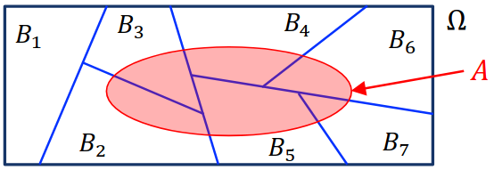

Probability
Table of Contents
1. Probability
Intuitively, probability is a measure of likelihood or chance. We can think of probability from two viewpoints:
Probability can be viewed as proportion. The probability of an event is the proportion of that event to the total. For example, the probability of drawing a red ball from an urn of red and blue balls is the proportion of red balls to total balls.
Probability can be also viewed as frequency. The probability of an event is how frequent that event occurs compared to all events in our sample space. For example, we expect flipping a coin to land heads approximately half of the time, so the probability is \(\frac{1}{2}\).
The set of all possible outcomes is called the sample space, and is denoted by \(\Omega\). An event in an experiment is a subset of \(\Omega\). The key question we want to address is what the probability of an event is.
Mathematically, given an event \(E \subset \Omega\), assign a number \(\mathbb{P}(E) \in [0,1]\) called the probability measure. Then, we can define the discrete probability space \((\Omega, \mathbb{P})\) such that:
- \(\Omega\) is a sample space
- A probability \(\mathbb{P}(\{\omega\})\) for each \(\omega \in \Omega\) such that:
- \(\mathbb{P}(\{\omega\}) \in [0, 1] \; \forall \omega \in \Omega\)
- \(\mathbb{P}(\Omega) = \sum_{\omega \in \Omega}\mathbb{P}(\{\omega\}) = 1\)
Example: Biased coin tosses
A biased coin with \(\mathbb{P}(\text{Heads})=p\) is tossed \(n\) times. We want to find \(\mathbb{P}(E_k)\), where \(E_k\) is the event of getting \(k\) heads.
We can define \(S=\{H, T\}\), and our sample space is just all the length \(n\) strings over \(S\). Then \(E_k\) corresponds to all the strings with \(k\) heads and \(n-k\) tails. So, \(\mathbb{P}(E_k) = \binom{n}{k}p^k(1-p)^{n-k}\)
Example: Birthday Paradox
Let \(B_k\) be the event that at least 2 people in a group of \(k\) people have the same birthday. Then, \(B_k^C\) is the event of no collision, i.e. no two people have the same birthday.
The total number of birthday distributions is \(n^k\), where \(n\) is the number of posible birthdays. The number of ways to have no collision is \(n(n-1)(n-2)\cdots (n-k+1)\). Then
\begin{align} \mathbb{P}(B_k^C) = \frac{n(n-1)(n-2)\cdots (n-k+1)}{n^k} \approx e^{-\binom{k}{2}\frac{1}{n}} \end{align}for large \(n\). Since \(n=365\), \(B_{23} > 0.5\).
1.1. Properties of Probability
An event \(B \subseteq \Omega\) is said to be partitioned into \(n\) events \(B_1, \dots , B_n\) if the following conditions are satisfied:
- \(B = B_1 \cup B_2 \cup \cdots \cup B_n\)
- \(B_i \cap B_j = \varnothing \; \forall i \neq j\) (that is, \(B_1, \dots, B_n\) are mutually exclusive)
Then, the following properties are satisfied for any valid probability space:
- Non-negativity: \(\mathbb{P}(A) \geq 0 \; \forall A \subseteq \Omega\)
- Countable Additivity: if \(B_1, B_2, \dots, B_n\) are partitions of \(B\), then
- Normalization: \(\mathbb{P}(\Omega) = 1\)
2. Conditional Probability
Consider two events \(A, B \subseteq \Omega\). \(B\) can then be partitioned into \(A \cap B\) and \(B \setminus (A \cap B)\). Conditional probability asks what the probability of \(A\) is given that \(B\) happens.
Conditioning on event \(B\) changes the probability space from \((\Omega, \mathbb{P})\) to \((B, \mathbb{P}_B)\). Then, the conditional probability of \(A\) given \(B\) is defined as:
\begin{align} \mathbb{P}(A | B) = \mathbb{P}_B(A \cap B) = \frac{\mathbb{P}(A \cap B)}{\mathbb{P}} \end{align}We see that this is due to the multiplication rule:
\begin{align} \boxed{\mathbb{P}(A \cap B) = \mathbb{P}(A | B)\mathbb{P}(B)} \end{align}2.1. Law of Total Probability
Suppose \(B_1, \dots, B_n\) are partitions of \(\Omega\). Then, for any \(A \subseteq \Omega\), we have:
\begin{align} \boxed{\mathbb{P}(A) = \sum_{i=1}^n \mathbb{P}(A | B)\mathbb{P}(B_i)} \end{align}This is true because we see that it becomes the sum of the intersections of each partition \(B_i\) with \(A\):

2.2. Bayes’ Rule
Suppose \(B_1, \dots, B_n\) partition \(\Omega\). Then, for any \(A \subseteq \Omega\), with \(\mathbb{P}(A) > 0\), we have:
\begin{align} \mathbb{P}(B_i | A) = \frac{\mathbb{P}(A | B_i)\mathbb{P}(B_i)}{\mathbb{P}(A)} = \frac{\mathbb{P}(A|B_i)\mathbb{P}(B_i)}{\sum_{j=1}^n \mathbb{P}(A|B_j)\mathbb{P}(B_j)} \end{align}Intuitively, if \(A\) is some event we are studying, then the \(B_i\) partitions are the different “ways” that event can occur (e.g. a positive test result is \(A\), then real positive and false positive are two ways that can occur). Bayes’ rule tells us that the probability it is one of those ways is equal to the probability of \(A \cap B_i\) happening (\(A\) happening via \(B_i\)) over the total probability of \(A\) happening.
2.3. Independence
Consider any two events \(A, B \subseteq \Omega\) and suppose that the chance of \(A\) does not depend on whether or not \(B\) occurs, i.e. \(\mathbb{P}(A | B) = \mathbb{P}(A | B^C)\). Then, since \(B\) and \(B^C\) partitions \(\Omega\), by the Law of Total Probability:
\begin{align} \mathbb{P}(A) &= \mathbb{P}(A | B)\mathbb{P}(B) + \mathbb{P}(A|B^C)\mathbb{P}(B^C) \notag \\ &= \mathbb{P}(A|B)\left(\mathbb{P}(B)+\mathbb{P}(B^C)\right) \notag \\ &= \mathbb{P}(A|B) \notag \end{align}Then, if \(A\) and \(B\) are independent, by (3) we know that \(\mathbb{P}(A \cap B) = \mathbb{P}(A | B)\mathbb{P}(B)\). But \(\mathbb{P}(A | B) = \mathbb{P}(A)\), so:
\begin{align} \boxed{\mathbb{P}(A\cap B) = \mathbb{P}(A)\mathbb{P}(B)} \end{align}Considering the box model, this means that in our probability space, the events of \(A\) and \(B\) must overlap in a very specific way such that either \(A\) or \(B\) happening tells us nothing about the other. To achieve this, the proportion of \(B\) that falls inside \(A\) must be exactly the same as the proportion of \(B\) with respect to the entire box.
This implies that the complements of the events must also be independent:
- \(\mathbb{P}(A^C \cap B) = \mathbb{P}(A^C)\mathbb{P}(B)\)
- \(\mathbb{P}(A \cap B^C) = \mathbb{P}(A)\mathbb{P}(B^C)\)
- \(\mathbb{P}(A^C \cap B^C) = \mathbb{P}(A^C)\mathbb{P}(B^C)\)
2.3.1. Mutual Independence
Events \(A_1, \dots , A_n\) are mutually independent if for all subsets \(I \subseteq \{1, \dots, n\}\) with \(|I| \geq 2\):
\begin{align} \mathbb{P}\left(\bigcap_{i\in I} A_i\right) = \prod_{i \in I}\mathbb{P}\left(A_i\right) \end{align}In other words, a set of events are mutually independent if any intersection of any subset of those events is equivalent to the probabilities of each event multiplied together.
Alternatively, events \(A_1,\dots,A_n\) are mutually independent if for all \(B_i \in \{A_i, A_i^C\}\) such that \(i = 1,\dots,n\), we have:
\begin{align} \mathbb{P}(B_1 \cap \cdots \cap B_n) = \prod_{i=1}^n \mathbb{P}(B_i) \end{align}This is similar to the above but with complements as well.
Events \(A_1,\dots,A_n\) are said to be pairwise independent if \(\mathbb{P}(A_i \cap A_j) = \mathbb{P}(A_i)\mathbb{P}(A_j)\) for all \(i,j\) such that \(i \neq j\). Note that pairwise independence does not imply mutual independence!
2.4. Product Rule
For events \(A_1,\dots,A_n\) on the same probability space, the product rule says that:
\begin{align} \boxed{\mathbb{P}(A_1 \cap \cdots \cap A_n) = \mathbb{P}(A_1)\mathbb{P}(A_2|A_1)\mathbb{P}(A_3|A_1\cap A_2) \cdots \mathbb{P}(A_n|A_1 \cap \cdots \cap A_{n-1})} \end{align}Intuitively, this just says that the probability of events \(A_1\) through \(A_n\) happening is just the probability of \(A_1\) happening, times the probability of \(A_2\) happening after \(A_1\) has happened, and so on.
Proof: We proceed by induction on \(n\). The base case of \(n=1\) holds since \(\mathbb{P}(A_1) = \mathbb{P}(A_1)\).
Assume that the product rule holds for all \(n \leq k\). Then, for \(n=k+1\), we have:
\begin{align} \mathbb{P}(A_1 \cap \cdots \cap A_{k+1}) = \mathbb{P}\left(\left(\bigcap_{i=1}^k A_i\right) \cap A_{k+1}\right) \notag \end{align}Let’s call the event \(B=\bigcap_{i=1}^k A_i\). Then, we have:
\begin{align} \mathbb{P}(A_1 \cap \cdots \cap A_{k+1}) &= \mathbb{P}(B \cap A_{k+1}) \notag \\ &= \mathbb{P}(B)\mathbb{P}(A_{k+1}|B) \notag \end{align}By the inductive hypothesis, \(\mathbb{P}(B) = \mathbb{P}(A_1)\cdots\mathbb{P}(A_k|A_1\cap \cdots \cap A_{k-1})\), so we find that our expression is equal to \(\mathbb{P}(A_1) \cdots \mathbb{P}(A_{k+1}|A_1 \cap \cdots \cap A_k)\), and we are done. \(\square\)
3. Union Bound
If \(A_1,\dots,A_n\) are mutually exclusive, then we have:
\begin{align} \mathbb{P}\left(\bigcup_{i=1}^n A_i\right) = \sum_{i=1}^n \mathbb{P}(A_i) \end{align}It can be seen that this is true since intuitively mutually exclusive events have no overlapping area between them in the box model.
We can also define a union bound, such that for all events \(A_1, \dots, A_n\) on the same probability space:
\begin{align} \boxed{\mathbb{P}\left(\bigcup_{i=1}^n A_i\right) \leq \sum_{i=1}^n \mathbb{P}(A_i)} \end{align}Example: Monochromatic subgraphs
Theorem: If \(n \leq 2^{\frac{m}{2}}\) for \(m \geq 3\), then there exists a 2-coloring of the edges of \(K_n\) such that it contains no monochromatic \(K_m\) subgraph.
Proof: We proceed using the probabilistic method: we prove the existence of this coloring by showing that there is a positive probability that a randomly chosen object has the desired probability.
Say we color each edge of \(K_m\) either blue or red with probability \(\frac{1}{2}\). There are \(\binom{n}{m}\) distinct subgraphs \(K_m\) in \(K_n\). Let \(E_i\) be the event that the i-th \(K_m\) is monochromatic.
We know that for a graph \(K_m\), we must color \(\binom{m}{2}\) edges with the same color, and we have two choices for the color. Therefore, the probability that a graph \(K_m\) is monochromatic is \(\mathbb{P}(E_i) = \frac{2}{2^{\binom{m}{2}}}\). Then, the probability that at least one \(K_m\) subgraph in \(K_n\) is monochromatic is the union of all the events \(E_i\):
\begin{align} \mathbb{P}\left(\bigcup_{i=1}^{\binom{n}{m}}\right) \notag \end{align}Then, using the union bound, we can set an upper bound to this probability:
\begin{align} \mathbb{P}\left(\bigcup_{i=1}^{\binom{n}{m}}\right) &\leq \sum_{i=1}^{\binom{n}{m}} \mathbb{P}[E_i] \notag \\ &= \binom{n}{m}\frac{2}{2^{\binom{m}{2}}} \notag \\ &\leq \frac{2^m}{m!} \frac{2}{2^{\binom{m}{2}}} \notag \\ &\leq \frac{2^{\frac{m^2}{2}}}{m!}\frac{2}{2^{\binom{m}{2}}} \notag \\ &= \frac{2^{\frac{m}{2}+1}}{m!} \notag \\ &\leq 1 \notag \end{align}Thus, the probability that at least one \(K_m\) in \(K_n\) is monochromatic is less than one. Since the probability that no \(K_m\) in \(K_n\) is monochromatic is the complement, that probability must be greater than zero. \(\square\)
3.1. Hashing
Hashing uses a hash function \(h: U \rightarrow T\) to map an input from a large domain into a fixed-size representation, where \(U\) is the universe of keys and \(T\) is the space of our hash table.
We can model a hash function as mapping each key uniformly at random to \(n\) labelled bins. However, we want to minimize the probability that a collision will occur (i.e. two keys maps to the same location). The question is, for a given hash table size \(n\) and some \(\epsilon > 0\), what is the largest number of keys \(m\) such that the probability of collision is less than \(\epsilon\)?
The number of pairs of keys is \(\binom{m}{2}\). For \(i\) in \(1, ..., \binom{m}{2}\), let \(C_i\) be the event that pair \(i\) collides. Then, the probability \(\mathbb{P}(C_i) = \frac{1}{n}\), as there is one slot out of the \(n\) locations that the second key can pick to collide with the first.
Then the probability of the event \(C\) that at least one pair collides is given by the union \(\bigcup_{i=1}^{\binom{m}{2}}C_i\). Then, by union bound, we have:
\begin{align} \mathbb{P}\left(\bigcup_{i=1}^{\binom{m}{2}}C_i\right) & \leq \sum_{i=1}^{\binom{m}{2}}\mathbb{P}(C_i) \notag \\ &= \binom{m}{2}\frac{1}{n} \notag \\ &\leq \frac{m^2}{2}\frac{1}{n} \notag \end{align}Thus, we want to find \(m\) such that \(frac{m^2}{2}\frac{1}{n} \leq \epsilon\). This is satisfied when:
\begin{align} m \leq \sqrt{2\epsilon n} \notag \end{align}3.2. Load Balancing
Say we have \(m\) identical jobs that we wish to load balance across \(n\) identical processors. Define \(L_i\) as the load (i.e. number of jobs) of processor \(i\). Call event \(A_k\) to be the event that some processor has a load of at least \(k\). Then, the event \(\bar{A}_k\) is the event that all processors have less than \(k\) jobs. We want to find the smallest \(k\) such that \(\mathbb{P}(\bar{A}_k) \geq \frac{1}{2}\) (i.e. the smallest \(k\) such that the probability that all processors have less than \(k\) jobs allocated to them is greater than half). Equivalently, we want to find \(k\) such that \(\mathbb{P}(A_k)\leq\frac{1}{2}\).
We know that \(\mathbb{P}(A_k) = \mathbb{P}\left(\bigcup_{i=1}^{n} \left(L_i \geq k\right)\right)\). Then, by union bound:
\begin{align} \mathbb{P}\left(\bigcup_{i=1}^{n} \left(L_i \geq k\right)\right) &\leq \sum_{i=1}^n\mathbb{P}(L_i \geq k) \notag \\ &= n \mathbb{P}(L_1 \geq k) \notag \end{align}Say \(B_S\) is the event that all jobs in some subset \(S \subseteq \{1, \dots, m\}\) land in bin 1 (i.e. processor 1). Since each job has probability \(\frac{1}{n}\) in landing in processor 1, the probability of \(B_S\) is \(\mathbb{P}(B_S) = \frac{1}{n^{|S|}}\).
Then, the event \(L_1 \geq k\) is just the union of events \(B_S\) such that \(S\) is all the possible subsets of the jobs such that \(S\) is of size \(k\). Thus, by union bound:
\begin{align} \mathbb{P}(L_1 \geq k) &\leq \sum_{S \subseteq \{1, \dots, m\}: |S|=k} \mathbb{P}(B_S) \notag \\ &= \binom{m}{k} \frac{1}{n^k} \notag \end{align}Say \(n=m\) (number of processors is equal to number of jobs). Then, \(\mathbb{P}(A_k) \leq n\binom{n}{k}\frac{1}{n^k} \leq \frac{n}{k!}\). Thus, \(k\) just needs to satisfy \(\frac{n}{k!} \leq \frac{1}{2}\).
3.3. Coupon Collection
Say we have \(n\) distinct coupons, with \(1\) coupon per box. All coupon types are equally likely to be in any give box, and we wish to collect all \(n\) distinct coupons to “win.” Let \(A_i\) be the event that coupon \(i\) is not collected after \(m\) purchases.
We can think of this problem as throwing \(m\) unlabelled balls uniformly at random into \(n\) labelled bins. The probability that some coupon is not collected is:
\begin{align} \mathbb{P}\left(\bigcup_{i=1}^n A_i\right) &\leq \sum_{i=1}^n\mathbb{P}(A_i) \notag \\ &= n\mathbb{P}(A_1) \notag \\ &= n\left(1-\frac{1}{n}\right)^m \notag \end{align}Since \(\left(1-\frac{1}{n}\right)^n \approx e^{-1}\) as \(n\) approaches infinity, we can write the probability approximately as \(ne^{-\frac{m}{n}}\). Suppose we want \(\mathbb{P}\left(\bigcup_{i=1}^n A_i\right) \leq e^{-1} \approx 0.368\). Then, solving for \(m\), we find that \(m \geq n\ln n + n\).